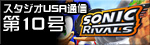
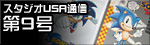
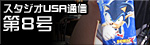
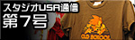
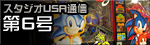
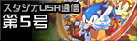
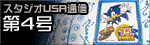
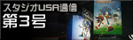
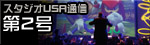
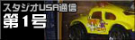

スタジオＵＳＡ通信
「スタジオＵＳＡ」現地の様子をレポート！
「スタジオUSA通信」のコーナーでは、アメリカのサンフランシスコにある「スタジオUSA」から
アメリカでのソニック関連の情報など現地での様子を紹介していきます。
-

第２１号は、「ソニックライバルズ２」の魅力をご紹介！
いつの間にか連載20回を数えていたこのコーナーだけど、実は……今回が最終回。
-

第２０号は、「ソニックチャンネル」の年表に載っていなかったソニック関連のゲームをご紹介！
-

第１９号は、ソニック X のカードゲームをご紹介！
-

第１８号は、日本国外で発売されたCDなど今では手に入りにくいものも含めて、いくつかご紹介！
-

第１７号は、「頑張ってゲットする」ソニックグッズを紹介！
-

第１６号は、アメリカで発売されているソニックグッズについて、スタジオUSAのアートディレクター、星野 一幸にお話を伺いました！
-

第１５号は、「プラグ＆プレイ」と呼ばれているケーブルをテレビに繋ぐだけで遊べるゲーム機をご紹介！
-

第１４号は、『ナイツ』の最新作、『NiGHTS:Journey of Dreams（邦題未定）』について飯塚プロデューサーに、その意気込みを訊いてみました！
-

第１３号は、『SONIC AND THE SECRET RINGS』の限定パッケージや
サンフランシスコで開かれた「ビデオ・ゲームズ・ライブ！」イベントをご紹介！
-

第１２号は、知育・教育系のソフトウェアをご紹介！
最近のアメリカでは、知育玩具といえば、Leap Frogシリーズのものが大人気。
-

第１１号は、霧と橋と坂で知られるこじんまりした都市、
サンフランシスコの街をご紹介！
-

第１０号は、セガ・オブ・アメリカで『ソニックライバルズ』を手がけた
飯塚ディレクターのインタビューをご紹介！
-

第９号は、セガ・オブ・アメリカでライセンス関係を取りまとめる担当者をご紹介！
-

第８号は、アメリカで発売されているソニックのアイスや
過去に制作されたハッピーミールトイをご紹介！
-

第７号は、アメリカで売られている様々なソニックのＴシャツをご紹介！
-

第６号は、スグレモノのコントローラーと、
ロンドンでのゲームソフトパッケージの違いをご紹介！
-

第５号は、アメリカで発売されているソニック関連のコミックをご紹介！
-

第４号は、ニューヨークで行われた「ライセンスショウ」と
ソニック誕生日イベントの模様をご紹介！
-

第３号は、ロサンゼルスで開催された「E3」のレポートと
海外で制作されているソニックタイトルの紹介！
-

第２号は、サンフランシスコで開催された「北加桜祭り」と、
サンノゼで開催された「ビデオ・ゲームズ・ライブ！」をレポート！
-

記念すべき第１号は、サンフランシスコにある「スタジオUSA」のまわりで見つけた
ソニックグッズなどをレポート！